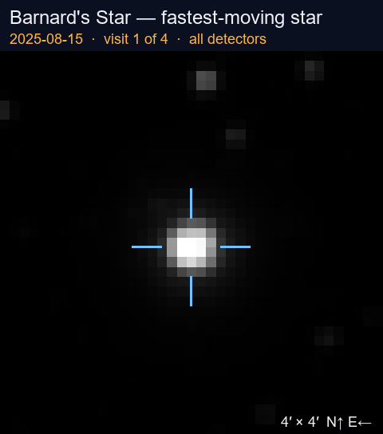
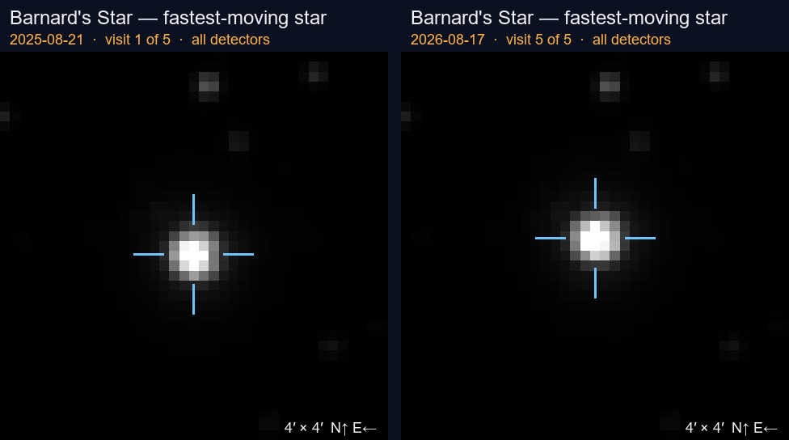
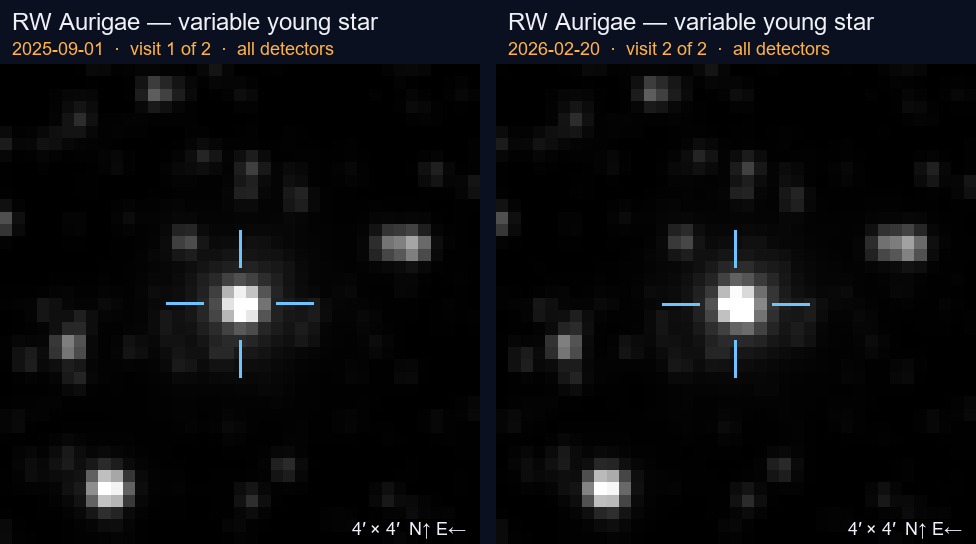

NASA SPACE APPS CHALLENGE 2026 · PLANET X AND SPHEREX
Radians
Blink NASA SPHEREx infrared images of any patch of sky, and watch what moves.
radians.onrender.com · github.com/merttmtnn-sudo/Radians
Mert Metin · Efe Gönderen · Bora Hısım · Emre Bozkaya
THE IDEA
A blink comparator for the infrared sky
SPHEREx images the whole sky every six months in 102 infrared colours: 300+ exposures of any spot, in an archive built for astronomers. In 1930 Tombaugh found Pluto by flipping between two plates. Radians flips through every SPHEREx visit, in a browser.



Real SPHEREx frames as Radians shows them: two stars on the move, one young star changing brightness.


First and last SPHEREx visit as Radians blinks them: Barnard’s Star has moved north (marker), RW Aurigae has changed brightness.
HOW TO USE IT
Four steps, no installation
1
Pick a target
Type a star name or RA/Dec, or press one of the five challenge targets.
2
Watch it blink
Each frame is one SPHEREx visit. Play, step, pick detectors and field of view.
3
Let it point
Difference views and an automatic finder mark what moved, changed or appeared.
4
Dig deeper
Click any star for its spectrum and light curve; copy a report; download CSV.
Every view is a shareable, embeddable link. Interface in English and Turkish.
HOW IT WORKS
From a star name to an aligned flip-book
1 · RESOLVE
CDS Sesame
Name → position and proper motion.
›
2 · FIND
NASA IRSA
Every SPHEREx exposure covering it, all public releases.
›
3 · READ
Byte ranges
Only the rows needed: ~0.5 MB of each 65 MB file.
›
4 · ALIGN
One sky grid
Reprojected, flag-masked, co-added per visit.
›
5 · CHECK
Known sky
Gaia DR3, SkyBoT asteroids, NEOSSat archive.
Because SPHEREx’s filters change wavelength across the detector, one position measured in all 300 exposures is a 0.75–5 µm spectrum: Radians makes it on the fly for any star you click.
RESULTS ON THE CHALLENGE TARGETS
It finds what the challenge hid
| Target | Radians measured | Known value |
|---|---|---|
| Barnard’s Star | moves 11.7″/yr toward PA 354° | 10.4″/yr, PA 356° (saturated core) |
| ε Indi B | moves 4.69″/yr toward PA 123° | 4.68″/yr, PA 122° |
| WISE 0855−0714 | detected at 4.4–5 µm, 9–13σ | coldest known brown dwarf |
| RW Aurigae | brightness changes ×2.1 between visits | known variable young star |
| R Draconis | saturated: tracked with PSF-wing light curve | Mira variable |
Automatic finder on public SPHEREx data, compared with catalogue values. Each find is also checked against Gaia DR3: unlisted ones are marked “possibly new”.
CONTEXT FROM PARTNER AGENCIES
Every candidate is checked against what is already known
ESA Gaia DR3
Stars moved to each frame’s date with their proper motions; each find labelled known or possibly new.
IMCCE SkyBoT
Known asteroids and comets marked at the exact time of each frame.
CSA NEOSSat
Archived images of the field from Canada’s asteroid-hunting microsatellite (CADC).
Plus a wider view in Aladin Lite with 2MASS, AllWISE, DSS2 and SPHEREx all-sky maps served by NASA IRSA, and per-pixel SPHEREx quality flags.
PLANET X
A distant planet is a faint dot that is somewhere else at the next visit
Radians makes that comparison available for any spot SPHEREx has seen twice, to anyone, with known stars and asteroids already accounted for. Open source (MIT), running at radians.onrender.com.